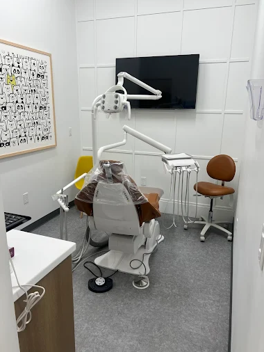
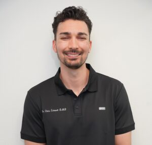

Monday
10 AM to 6 PM

Our North Decatur office, open Sunday 8:30 AM to 3 PM and to 7 PM on Tuesday, with online booking of its own.
6311 N. Decatur Blvd., Suite 140, Las Vegas, NV 89130
(702) 522-0119Saturday is closed here, so Sunday 8:30 AM to 3 PM is this office's only weekend availability.
Tuesday opens at 8:30 AM and runs to 7 PM, the longest day at this address. Online booking is available at this office through its own booking link.
Address
6311 N. Decatur Blvd., Suite 140, Las Vegas, NV 89130
Phone
(702) 522-011910 AM to 6 PM
8:30 AM to 7 PM
10 AM to 5 PM
8:45 AM to 4 PM
8:45 AM to 4 PM
Closed
8:30 AM to 3 PM
All six specialty groups are delivered at this office. Same-day and emergency appointments are available.
Exams, cleanings, preventative care, digital X-rays, fluoride and sealants are all available here.
Restorations, cosmetic dentistry, and oral and maxillofacial surgery are delivered at this office.
Periodontics and orthodontics are treated here too.

North Decatur is one of seven offices Radiant Smiles owns and runs across Las Vegas, North Las Vegas and Henderson.
The same practice, the same roster and the same standard apply at each of the seven. One brand, one roster, one domain.
The market alternative is separately owned or separately branded practices trading under a shared name. That structure hands you a referral where this one hands you an appointment.
Ten dentists are named on our team page, each with real credentials stated. Two of them are fluent in Spanish.



An examination, X-rays where they add something, then a plain account of what we found. New patients can use the published entry offer for that visit.
Our insurance and financing page lists 41 named plans, including Culinary Health Fund, Teachers Health Trust and Nevada Medicaid. Network status varies by office and by plan. Call this office with your plan details before you come in.
Same-day and emergency appointments are available. Call (702) 522-0119 and say that it is urgent.
Yes. This office has its own online booking link, and it is on this page. You can also call the office directly.
Book at the North Decatur office, or call (702) 522-0119 and speak to this office directly.